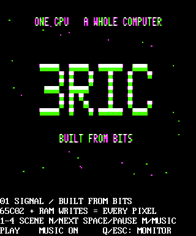

Build a whole computer to understand it. 3RIC is an original
Apple-II-class 65C02 machine, with its own ROM, custom video logic,
and a browser emulator that puts the whole thing in your hands.
Start with a one-minute graphics-and-music demo.
Stay to find out how every bit works.
Opens the emulator + editor. No install. No account. Use 1x speed; click the emulator for sound.
Framebuffer / still capture3RIC · $0800

Still from the actual emulator — not a live demo or video.
320 × 384 framebuffer, displayed at 4:3 to match the machine’s non-square pixels.
Use “Run the demo” to see it in motion.
Processor
65C02
Native clock
1.5734375 MHz
System ROM
512 KB
Video hardware
Logic, not a GPU
01 / The demo
One minute. Four views of the machine.
Built from Bits is an original 65C02 program: an approximately
one-minute autoplay loop at native 1x speed. Let the four scenes play through,
or take over with the keyboard.
01
Signal
Hi-res / first light
A hi-res 3RIC logo and a moving starfield. The opening signal comes from the machine’s own graphics memory.
02
Color
Lo-res / 16 colors
A 16-color lo-res plasma fills a 40 × 40 mixed graphics area, with four explanatory text rows beneath it.
03
Wireframe
Hi-res / CPU rasterized
A rotating wireframe cube, rasterized by the CPU. Every line is drawn by the 65C02, not a GPU.
04
Stereo
Two AY chips / six channels
An original six-channel chiptune sequencer. Pitch and level bars reflect the actual values sent to two AY chips.
The 65C02 generates the visuals, sequences the music, and handles input.
The browser hosts the emulator; there is no JavaScript animation overlay standing in for the program.
02 / Take the controls
First, let it run. Then interrupt it.
The launch link loads the assembly into the existing editor and automatically
assembles and runs it. Click the emulator screen to give it keyboard focus.
You can change scenes, pause, or drop back to the monitor at any time.
1–4
Choose a scene directly.
N / Right
Next scene.
Left
Previous scene.
Space
Pause or resume. Pausing freezes the score and animation and silences sound.
M
Music on/off.
Q / Esc
Quit to the ROM monitor.
03 / Under the display
The pixels are the result. The computer is the project.
3RIC began with a question: how do 8-bit computers actually work?
The answer became a from-scratch machine, from chip-level schematics
and address decoding to a ROM and a cycle-honest emulator.
Follow the journey from the breadboard.
Video / custom logic
Color without a GPU.
The hardware design generates VGA with custom logic. It reproduces
NTSC-style artifact color in logic circuits, bringing the Apple II’s
clever color behavior to a VGA display. The emulator models that behavior.
Memory / shared timing
One RAM. Two jobs.
The CPU and video hardware share RAM. They have to take turns on the bus:
CPU reads and writes, then video fetches. Getting the timing right is
what lets the processor change a picture while the display reads it.
Address bus / 22V10 GAL
Give every address a home.
22V10 GAL address-decode logic selects the memory or I/O device that
responds to an address. These are the connections behind a program’s
loads and stores, not hidden services in a modern graphics stack.
C++ / WebAssembly
Same VM. A different front door.
The same C++ VM core powers the native emulator and compiles to
WebAssembly for the browser. It boots 3RIC’s real 512 KB ROM.
No install or account, and no second browser-only imitation of the machine.
Beyond this demo, the wider machine supports keyboard and serial I/O, SNES pads,
micro-SD, and Disk II. This program is a graphics-and-music tour, not a test of
every peripheral. 3RIC is an original Apple-II-class computer with its own ROM,
not a claim of blanket Apple II compatibility.
04 / Make it yours
Read it. Change it. Run it again.
This is not a recording you can only watch. Open the assembly that makes it
happen, change a value, and let the same machine execute your version.
The tools are already in the browser.
Edit the source and select Assemble & Run.
Use the debugger to set an instruction breakpoint, step the CPU,
and inspect registers or memory. The demo’s Space key pauses its score
and animation; the debugger lets you stop at an instruction.
Take the bytes with you.
In that same editor, use Download .PRG for the raw program
or Download .woz for a bootable disk image.
These are editor exports, not separate prebuilt downloads.
Open the editor to export your version.
05 / Follow the wires
The schematics are part of the story.
In a sentence: 3RIC is a from-scratch, Apple-II-class 65C02 computer with
custom VGA logic, its own 512 KB ROM, and a C++ emulator shared by native
and WebAssembly hosts — built to learn, and documented along the way.